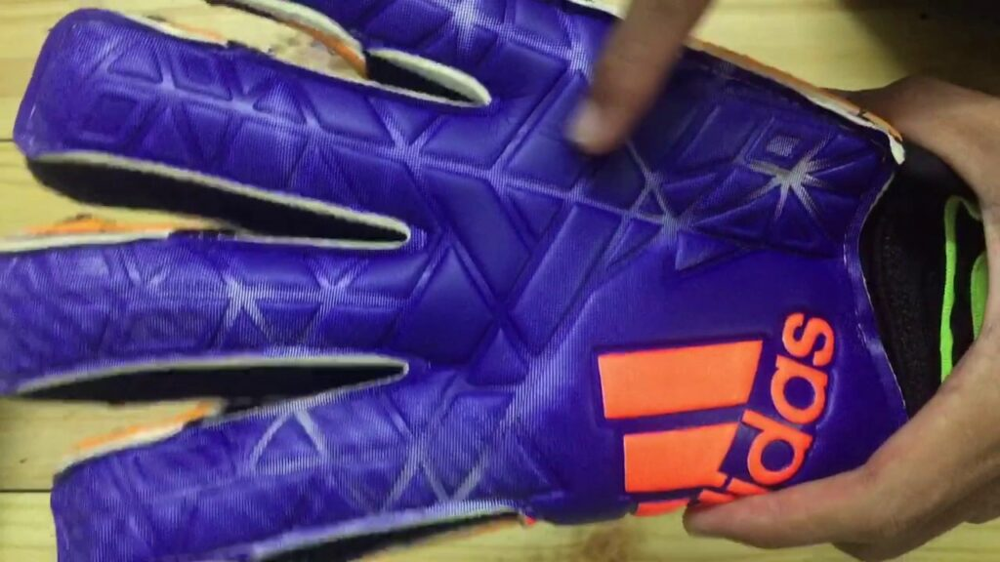

Giới thiệu chung
Cách tháo xương găng tay thủ môn là một quy trình quan trọng giúp tối ưu hiệu năng của găng tay, đảm bảo sự linh hoạt cũng như độ bền trong quá trình thi đấu. Việc này không chỉ hỗ trợ cải thiện cảm giác khi bắt bóng mà còn giúp người chơi dễ dàng bảo trì và làm sạch găng tay một cách hiệu quả. Khi bạn áp dụng kỹ thuật đúng, các khung xương bên trong găng tay có thể được tháo lắp một cách nhanh chóng, từ đó mang lại trải nghiệm thi đấu tốt hơn và giảm thiểu nguy cơ bị hư hỏng do tác động mạnh.
Hướng dẫn dưới đây sẽ cung cấp cho bạn một quy trình chi tiết và an toàn để tiến hành cách tháo xương găng tay thủ môn mà không làm ảnh hưởng tới chất lượng sản phẩm. Chúng tôi luôn đặt sự an toàn và chất lượng lên hàng đầu, bởi vì những thao tác không đúng cách có thể gây hỏng hóc không đáng có cho găng tay của bạn. Chào bạn, hello88, hãy cùng khám phá và làm chủ quy trình này để tăng cường hiệu suất thi đấu cũng như kéo dài tuổi thọ của dụng cụ.
Trong bài viết này, chúng ta sẽ đi sâu vào các bước chuẩn bị, công cụ cần thiết và những lưu ý quan trọng khi thao tác tháo xương. Bài viết cũng sẽ chỉ ra những lỗi thường gặp và cách khắc phục chúng, từ đó giúp bạn nắm vững quy trình một cách chuyên nghiệp.
Trước khi bắt đầu, bạn cần chuẩn bị những vật dụng dưới đây:
Các dụng cụ này không cần quá đắt tiền nhưng phải đảm bảo chất lượng để không làm hỏng găng tay trong quá trình thao tác. Ngoài ra, hãy lựa chọn những dụng cụ có tay cầm chắc chắn, giúp bạn kiểm soát tốt hơn khi thao tác.
Trước khi tiến hành, bạn cần tuân thủ một số quy tắc an toàn cơ bản để tránh gặp phải những rủi ro không đáng có:
“Sự an toàn trong từng thao tác là yếu tố quyết định sự thành công của quá trình tháo xương, giúp bạn bảo vệ cả dụng cụ và bản thân.”
Ngoài ra, hãy đảm bảo bạn có đủ ánh sáng và không gian làm việc thoáng đãng để có thể quan sát cẩn thận từng chi tiết trong quá trình tháo xương. Việc chuẩn bị kỹ lưỡng sẽ giúp bạn tránh được các lỗi không đáng có và đảm bảo hiệu quả công việc.
Sau khi đã chuẩn bị đầy đủ dụng cụ và đảm bảo an toàn, chúng ta sẽ tiến hành theo từng bước cụ thể để thực hiện cách tháo xương găng tay thủ môn. Hướng dẫn dưới đây được thiết kế để phù hợp cho cả những người mới bắt đầu cũng như những ai đã có kinh nghiệm nhưng mong muốn cải tiến quy trình làm việc.
Trước hết, hãy đảm bảo rằng găng tay đã được làm sạch và để khô. Điều này giúp cho việc xác định các đường chỉ may, vị trí khung xương và các chi tiết nhỏ trở nên dễ dàng hơn.
Trước khi tháo xương, bạn cần kiểm tra kỹ cấu trúc bên trong găng tay. Việc này giúp bạn hiểu rõ vị trí của các khung xương và xác định những đoạn chỉ may cần phải cắt bỏ.
Sau khi đã đánh dấu vị trí, bước tiếp theo là sử dụng kéo cắt hoặc dao cắt để mở đường chỉ may. Hãy làm theo các bước dưới đây:
Lưu ý rằng, trong quá trình này, bạn nên sử dụng dụng cụ sắc bén để đảm bảo việc cắt được chính xác và tránh gây hư hỏng không cần thiết. Khi các chỉ may đã được cắt, bạn sẽ thấy các khung xương được nối liền với bề mặt găng tay một cách chặt chẽ.
Tiếp theo, bạn cần tiếp tục thực hiện thao tác tháo khung xương ra khỏi găng tay. Các bước cụ thể như sau:
Một số người có thể cần sử dụng dụng cụ chuyên dụng để hỗ trợ việc tháo xương, đặc biệt là với những mẫu găng tay có khung xương phức tạp. Nếu có thể, hãy tham khảo thêm video hướng dẫn và các bài chia sẻ kinh nghiệm trên mạng để nắm bắt kỹ thuật chính xác.
Sau khi đã tháo xương thành công, việc cuối cùng là kiểm tra lại toàn bộ găng tay và tiến hành làm sạch các bộ phận đã tháo ra:
“Sau mỗi lần sử dụng, việc vệ sinh và kiểm tra găng tay là bước quan trọng để đảm bảo chất lượng và sự an toàn khi thi đấu.”
Để giúp bạn dễ dàng hình dung và lựa chọn phương pháp phù hợp nhất, dưới đây là bảng so sánh một số phương pháp phổ biến khi thực hiện cách tháo xương găng tay thủ môn:
| Phương pháp | Ưu điểm | Nhược điểm |
|---|---|---|
| Sử dụng kéo và dao cắt | Chính xác và dễ kiểm soát, chi phí thấp | Cần kỹ năng cắt tinh tế để tránh hư hỏng vải và cấu trúc |
| Dụng cụ chuyên dụng | Nhanh chóng, giảm thiểu rủi ro do sử dụng lực quá mạnh | Giá thành cao, không phải lúc nào cũng dễ tìm thấy |
| Tháo thủ công chậm rãi | Giảm nguy cơ gây hỏng khi thao tác quá nhanh | Tốn thời gian và đòi hỏi sự kiên nhẫn |
Bảng trên giúp bạn có cái nhìn tổng quan về ưu nhược điểm của từng phương pháp. Đối với những người mới bắt đầu, lựa chọn phương pháp sử dụng kéo và dao cắt có thể là lựa chọn hợp lý nhất, trước khi chuyển sang các dụng cụ chuyên dụng khi đã quen thuộc với quy trình.
Trong quá trình thực hiện cách tháo xương găng tay thủ môn, bạn có thể gặp phải một số lỗi phổ biến sau đây:
Những lỗi này thường gặp trong quá trình thao tác và có thể được khắc phục nếu bạn tuân thủ đúng hướng dẫn từng bước. Việc chăm chút và cẩn thận trong từng thao tác chính là chìa khóa để đảm bảo thành công.
Trên đây là hướng dẫn chi tiết về cách tháo xương găng tay thủ môn được chia thành các bước cụ thể, từ việc chuẩn bị dụng cụ đến quá trình thực hiện và những lưu ý bảo quản sau khi thao tác. Hy vọng rằng những chỉ dẫn này sẽ giúp bạn thực hiện việc tháo xương một cách an toàn và chuyên nghiệp, góp phần nâng cao hiệu suất thi đấu và kéo dài tuổi thọ cho găng tay.
Trước khi kết thúc, hãy nhớ rằng mỗi mẫu găng tay có thể có những đặc trưng riêng về cấu trúc và chỉ may, vì vậy việc làm quen với sản phẩm của mình sẽ giúp bạn điều chỉnh tốt hơn quy trình thao tác. Đừng ngần ngại tham khảo thêm các video hướng dẫn từ các chuyên gia và các bài chia sẻ kinh nghiệm trên các diễn đàn thể thao để có thêm bí quyết tối ưu.
Nếu bạn cần tìm hiểu thêm về các kỹ thuật liên quan hoặc muốn tham khảo thêm các kinh nghiệm thi đấu, hãy truy cập hello88 – nơi cung cấp nhiều thông tin hữu ích và cập nhật mới nhất từ cộng đồng thủ môn.
Cảm ơn bạn đã theo dõi bài viết này. Chúc bạn thành công với quy trình cách tháo xương găng tay thủ môn và luôn đạt được những màn trình diễn ấn tượng trên sân cỏ. Hẹn gặp lại, hello88.